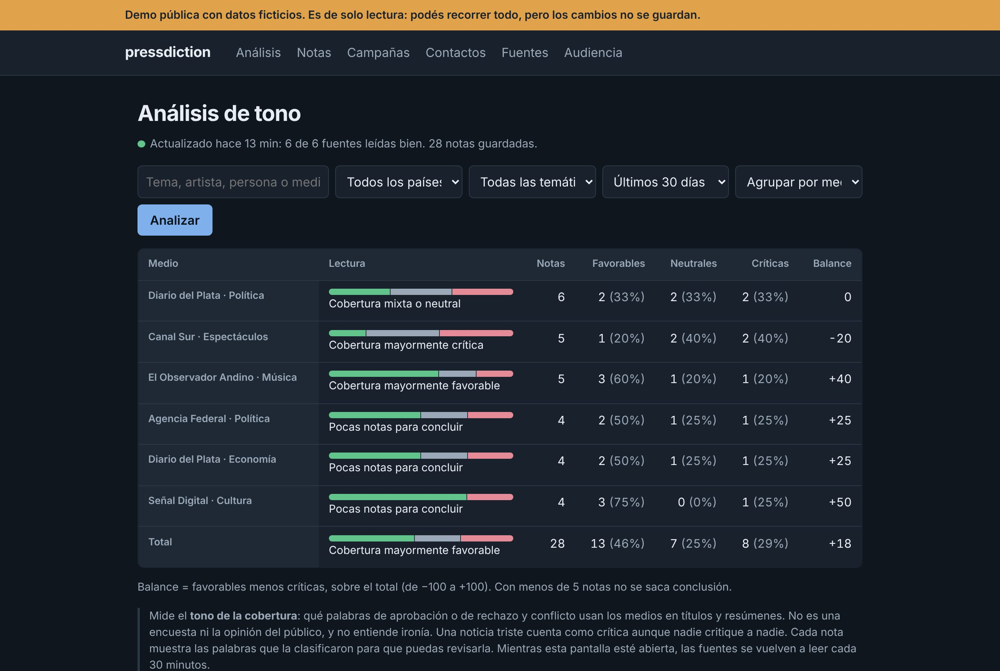
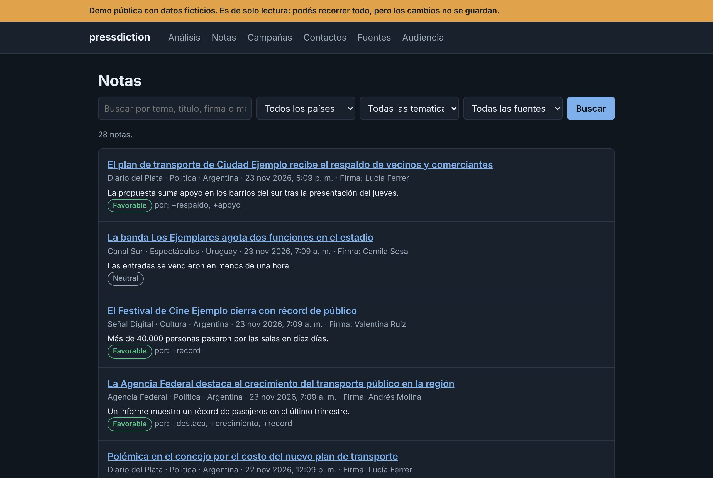
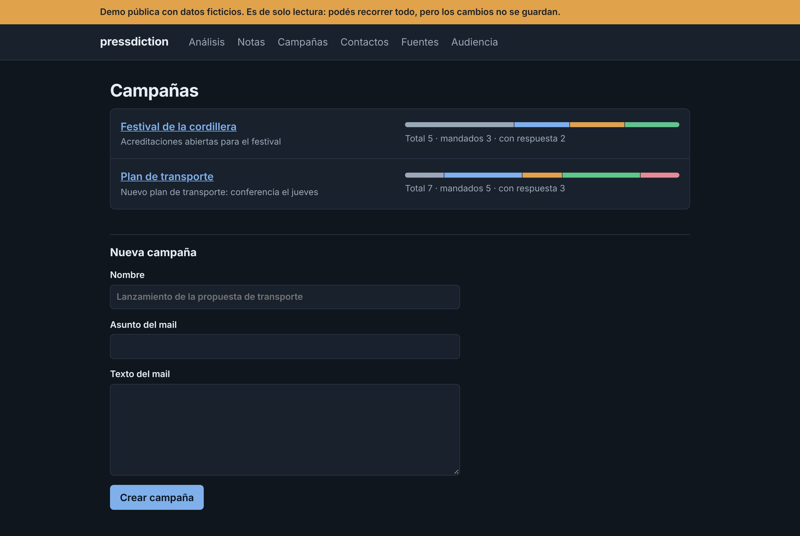
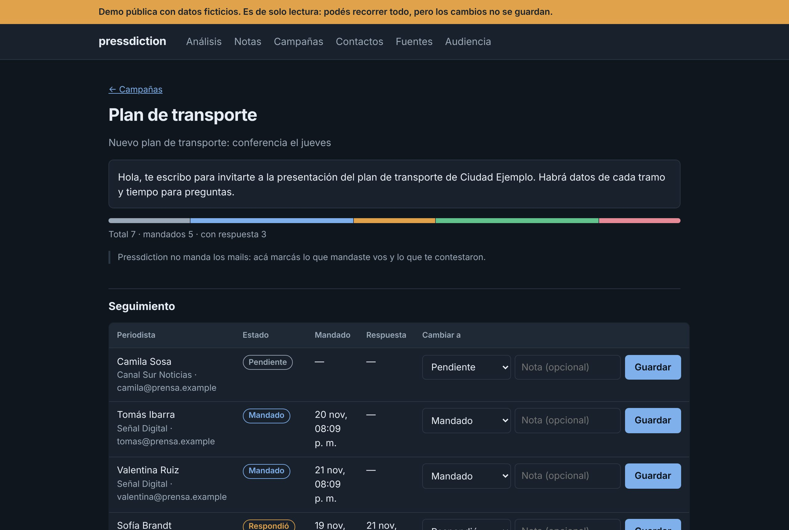
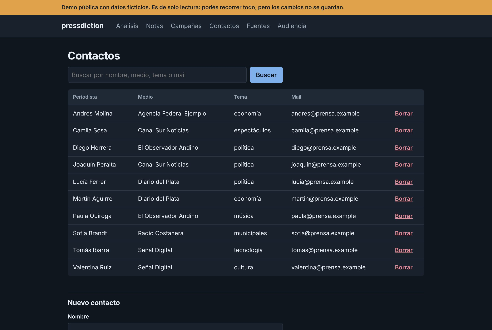
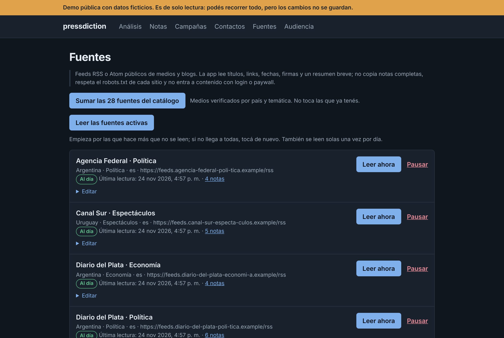
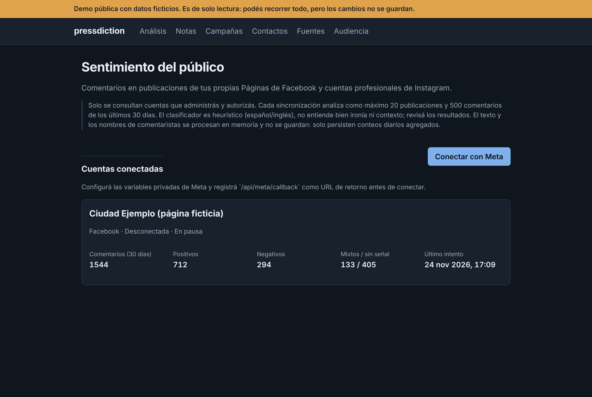

Un gestor de prensa para campañas: base de periodistas y medios, campañas con seguimiento de cada envío, lectura automática de medios por RSS y análisis del tono de la cobertura, con las palabras que explican cada resultado. A press manager for campaigns: a database of journalists and outlets, campaigns that track every pitch, automatic RSS reading of the media, and tone analysis of the coverage that shows the words behind each result.
La app real es privada (requiere login) porque guarda contactos reales. Estas son capturas de la misma app corriendo en modo demo, con datos ficticios. The real app is private (login required) because it stores real contacts. These are screenshots of the same app running in demo mode with fictitious data.
La pantalla de inicio: cómo titulan los medios un tema, por medio, país o temática. Con menos de 5 notas no saca conclusión.The home screen: how outlets headline a topic, by outlet, country or subject. With fewer than 5 articles it draws no conclusion.

Lo que publicaron las fuentes: título, firma, fecha, resumen breve y las palabras que definieron el tono. Solo metadatos, nunca el texto completo.What the sources published: headline, byline, date, a short summary and the words that set the tone. Metadata only, never the full text.

Cada campaña con su asunto y una barra de avance por estado: pendiente, mandado, respondió, publicado o descartado.Each campaign with its subject line and a progress bar by status: pending, sent, replied, published or dropped.

Por cada periodista: estado, fecha de envío, respuesta y una nota. La app no manda mails: dice "mandado", no "entregado".For each journalist: status, send date, reply and a note. The app does not send email, so it says "sent", not "delivered".

Periodistas con medio, tema que cubren y mail, con búsqueda y sin mails duplicados.Journalists with outlet, beat and email, searchable and with no duplicate emails.

Feeds RSS por país y temática, con el estado de la última lectura. Respeta robots.txt, no entra a paywalls y limita cada descarga.RSS feeds by country and subject, with the status of the last read. It respects robots.txt, never enters paywalls and caps every download.

Sentimiento de los comentarios en páginas de Facebook e Instagram conectadas por OAuth. Solo guarda conteos diarios, nunca textos ni nombres.Comment sentiment on Facebook and Instagram pages connected through OAuth. It stores daily counts only, never text or names.
